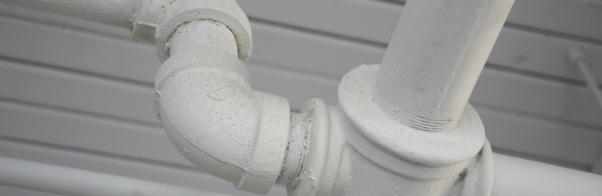
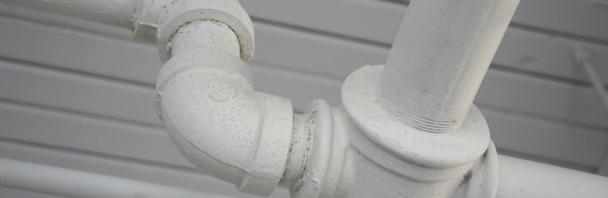

 Izin Usaha Jasa Konstruksi (IUJK) adalah izin usaha yang dikeluarkan Pemerintah Daerah kepada perusahaan untuk dapat melaksanakan kegiatan usaha jasa konstruksi baik sebagai perencana konstruksi (konsultan), pelaksana konstruksi (kontraktor) atau sebagai pengawas dan perencana konstruksi (konsultan).
IUJK / Bidang pekerjaan yang termaktub di SIUJK harus mengikuti yang ada di Sertifikasi badan Usaha Perusahaan tersebut (Sbu) dikeluarkan berdasarkan klasifikasi bidang dan sub bidang serta kualifikasi usaha jasa konstruksi Sertifikat Badan Usaha (SBU) yang dimiliki perusahaan . Sertifikat Badan Usaha (SBU) yang dimaksud adalah sertifikat yang dikeluarkan oleh Lembaga Pengembangan Jasa Konstruksi (LPJK)
Jenis Izin Usaha Jasa Konstruksi
Berdasarkan klasifikasi usaha jasa konstruksi di Indonesia, IUJK terdiri dari:
- SIUJK untuk Perusahaan Jasa Perencana Konstruksi (Konsultan) terdiri dari Golongan besar ( B1), Golongan menengah (M1), Golongan kecil (K1)
- SIUJK untuk Perusahaan Jasa Pelaksana Konstruksi (Kontraktor) terdiri dari Golongan besar (B2 & B1), Golongan menengah (M1), Golongan kecil (K3,K2 & K1)
- SIUJK untuk Perusahaan Jasa Pengawasan Konstruksi (Konsultan), Golongan besar (B1), Golongan menengah (M1) dan Golongan kecil (K1)
Persyarat Pengurusan SIUJK :
- Legal Umum Usaha (dari Akte – TDP – Struktur Organisasi – Neraca Keuangan – SPT Tahunan/Bulanan minimum 3 buan terakhir) – F. Copy
- SKA (Tenaga ahli) Asli
- KTA (Asosiasi) Asli
- SBU( Sertifikasi Badan Usaha) yang masih berlaku – Asli
- Foto Kantor (plang nama, ruangan dlsb)
- Foto Ruangan Direktur/Penanggung Jawab Perusahaan
- Fotocopy BPJSTK dan BPJS Kesehatan Perusahaan